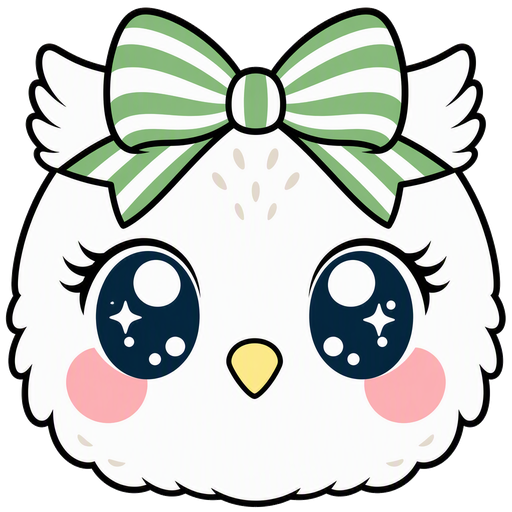

Pocket
鑑定
1
2
3
·
·
特定商取引法に基づく表記
Pocket
鑑定
Pocket
鑑定
☰
↑
☀
›
式
›
縁
›
¥
›
✎
›
👤
›
✉
›
📜
›
↗
›
🔔
›
🌐
🎨
↺
›
⌂
›
🔧 鑑定ロジック照合ツールを開く（開発者用）
テスト用プラン切替（課金実装までの開発者用）
free（体験モード・キーがあれば無制限）
おてがる（月間枠の動きをテスト）
スタンダード（月間枠・大）
使い放題（1日の適正利用範囲）
プランを選ぶと、枠の上限・80%での案内・上限到達時の停止メッセージを実機で確認できます（この端末のみ）。